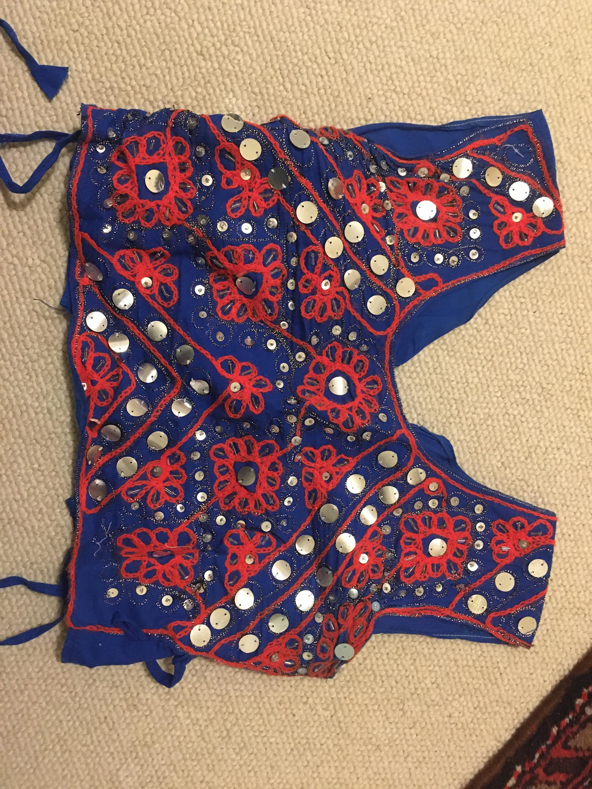
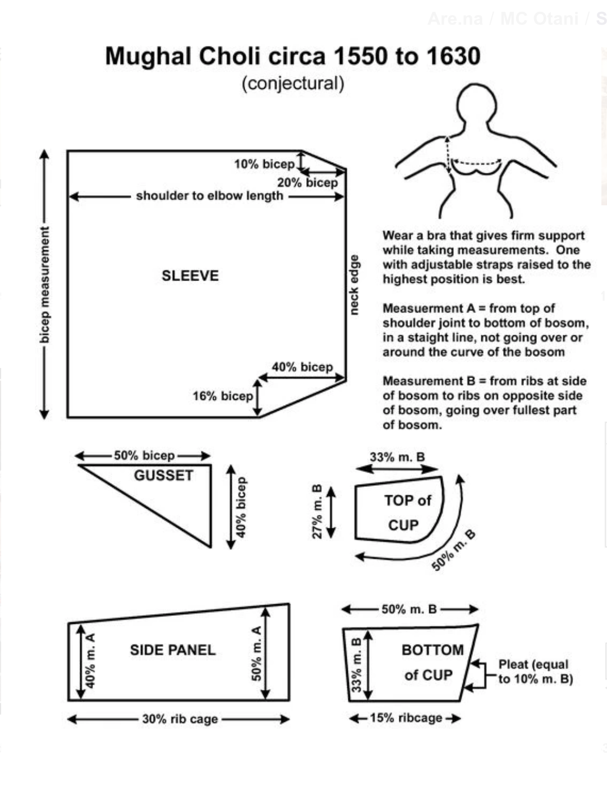
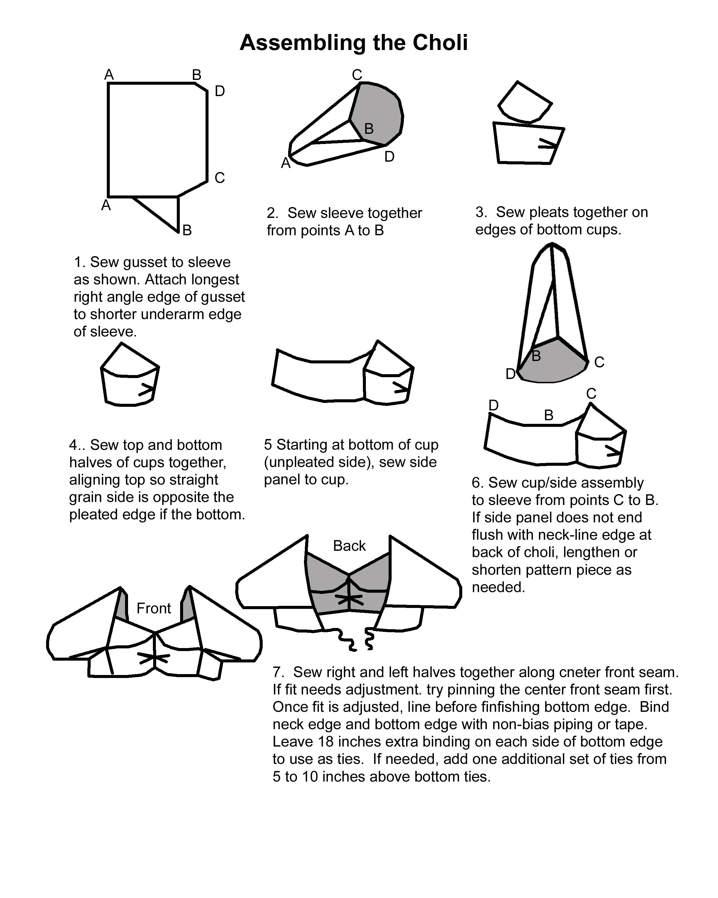
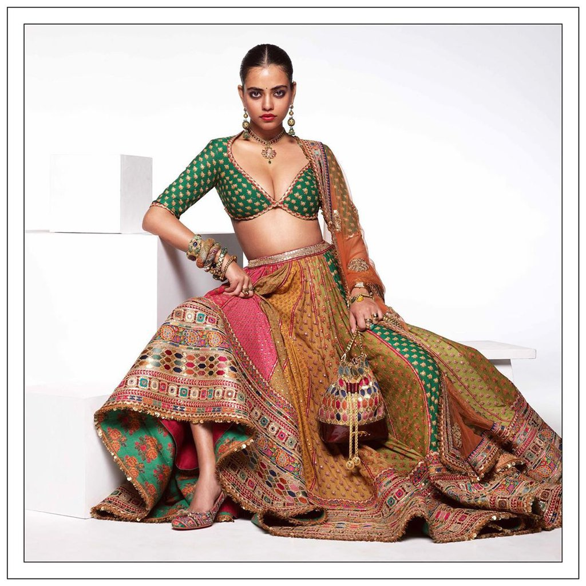
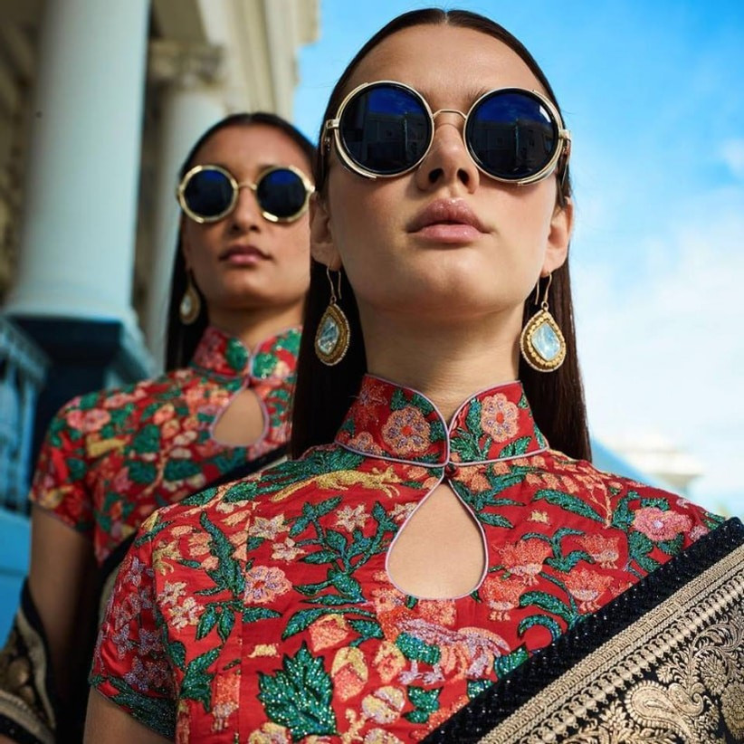
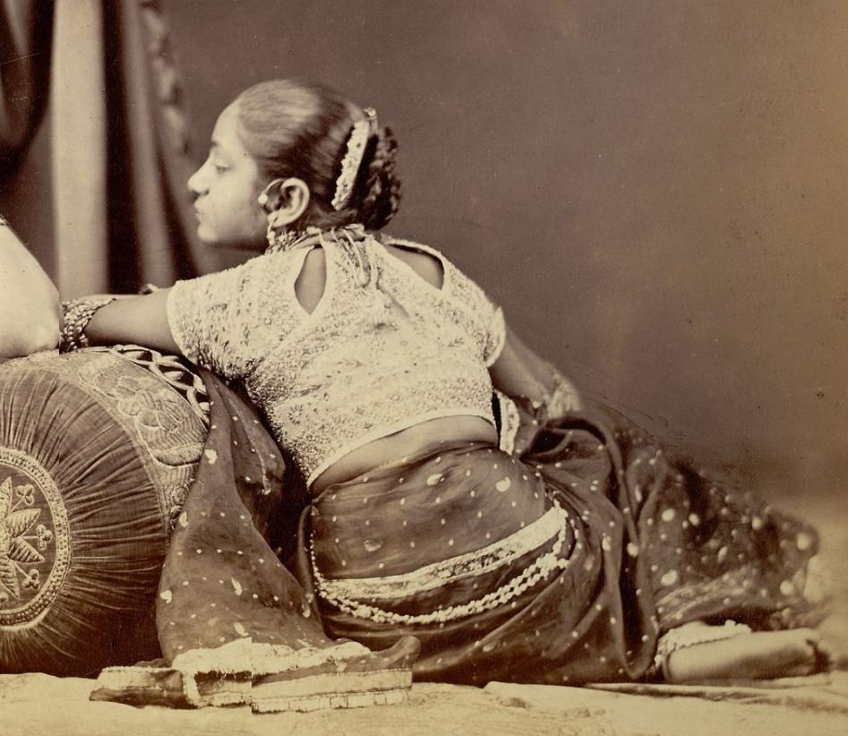
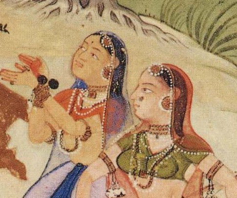
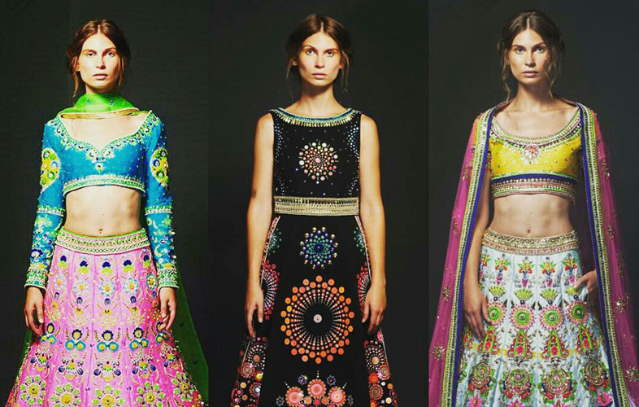

Some sources trace the origin of the choli to the arrival of the Mughals in the 16th century. Other sources trace the origins of the choli to the stanapatta, which was a draped breast band worn at least starting in the 6th century BC and attribute the development of the choli and its popularization to Mughal rule. Until then, Leaving the breasts bare was the most common way of dress. With the subsequent British rule in starting in the mid 19th century, expectations for women's dress grew even more modest, consolidating the role of the choli and the development of the saree blouse. The choli is thus part of a long history of colonization and cultural change and encapsulates many conflicting ideas about Indian femininity and modesty.
The sexualization of the female breast and subsequent sartorial endeavors to both cover it and exploit that sexualization is understood by many as one of the manifestations of a patriarchal objectification of women, a large part of which was imposed by Victorian norms during the British Raj. As a result, choosing to wear or not wear certain garments were also acts of resistance to colonial rule.

Fabrication

The choli is a sewn garment that covers the front and ties in the back, usually worn with a skirt or under a sari. Whereas the sari, when worn with bare breasts, was a draped piece, the choli is a tailored one that required stitching. Present-day tailoring and production methods make use of patternmaking to standardize these cuts. I really liked how an open-backed choli can be adjusted to fit a larger variety of shoulder widths and breast sizes, especially given how tricky fitted tops can be in serving different breast and shoulder sizes. Some cholis also have adjustable ties on the side to make them both fitted and breast friendly.
A similar piece to the choli is the sari blouse, but whereas the blouse is usually closed with a hook and eye in the front, leaving most of the ornaments and decorations to the back (as saris are draped in the front and end up covering the chest area), the choli is usually opened in the back with the emphasis in the front.
Making Our Own
Today, hi-fashion designers such as Sabyasachi Mukherjee, Manish Halhotra, Mandira Sharma, and Neeta Lulla and costume designers for Bollywood continue to explore and popularize new reinterpretations of traditional Indian dress. A famous example are the outfits worn by Madhuri Dixit and Nina Gupta in the piece Choli ke peechhe kya hai? In the blockbuster Khalnayak (1993), which saw a lot of backlash due to its highly suggestive nature. Nonetheless, Khalnayak , and many other popular movies of the time helped popularize new interpretations of these silhouettes.

Step 1
Step 2
Step 5
2Day/Tmrw

Sabyasachi Mukherjee

Sabyasachi Mukherjee

Woman in Choli, c. 1872

Vasant Rangini choliPriyanka Chopra in "Bikini Choli" from Dostana, 2008

Manish Arora choli


{kind=link}
{kind=link}
{kind=link}
{kind=link}
{kind=link}
{kind=link}
{kind=link}